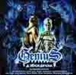

| Artist: | Daniele Liverani |
| Title: | Genius - Episode 1, A Human Into Dreams' World |
| Label: | Frontiers Records FR CD 112 |
| Length(s): | 79 minutes |
| Year(s) of release: | 2002 |
| Month of review: | [12/2002] |
| 1) | Without Me Today | 12.04 |
| 2) | The Right Place | 4.53 |
| 3) | Paradox | 9.28 |
| 4) | The Glory Of Our Land | 7.51 |
| 5) | All Of Your Acts | 6.32 |
| 6) | Dreams | 5.29 |
| 7) | My Pride | 7.31 |
| 8) | There's A Human | 5.09 |
| 9) | Father | 5.25 |
| 10) | Terminate | 5.40 |
| 11) | I'm Afraid | 8.54 |